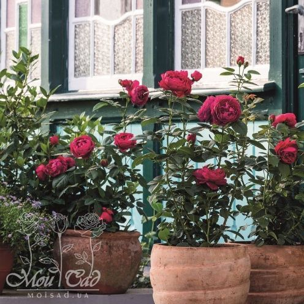

Роза Боскобел.Цветки густомахровые красиво сформированные, насыщенного лососёво-розового цвета, в соцветиях.Цветки в начале цветения имеют чашевидную форму, постепенно переходящую в классическую розетку. Многочисленные небольшие лепестки различных оттенков, смешиваясь, обеспечивают очень приятный эффект. Аромат восхитительный, мирры, боярышника с нотками цветков бузины, груши и миндаля. Цветение почти непрерывное. Куст пряморослый, высотой 90-100 см и шириной 75 см. Листва тёмно-зелёная, глянцевая, устойчивая к заболеваниям.
Роза Боскобел


РОЗА BORNEO ODORE
- Производитель Barni (Италия)
- Оригинатор / InterplantRoses B.V. / 2017г.
- Группа Чайно-гибридные
- Высота 80-100 см.
- Диаметр цветка 10-12см.
ОПИСАНИЕ РОЗА BORNEO ODORE
Роза Борнео Одоре Эта современная роза Borneo Odore не похожа ни на одну другую. Цветет розовыми с серебристо-белым реверсом крупными, диаметром 10-12 см, махровыми цветами, напоминающими пионы, на высоких крепко стоящих стеблях.
Стиль цветка довольно новаторский, в неформальном разрезе, состоит из множества тонких и узких лепестков, цветовые оттенки граней которых переходят от светло серебристого до чисто розового цвета. Повторно цветет в течение всего сезона, подходит для срезанных цветов. Аромат розы сильный и необычный. В ее гармоничном, сложном аромате, прежде всего присутствует жасмин, обогащенный мощной зеленой нотой гиацинта и поддержанный сладким фоном табака.
Высота быстро нарастающего компактного куста 70 - 80 см, ширина 50-60 см. Его молодые побеги красиво окрашены в медно-красный цвет. Куст хорошо разветвленный с полуматовыми листьями темно-зеленого цвета, иногда с пурпурными краями, с отличной устойчивостью к болезням.
Роза адаптируется ко всем не слишком сухим почвам и любому климату, выдерживая как дождь, так и жару. Рекомендуется посадка на солнечном месте или в светлой тени.
РОЗА ASCOT

Роза Аскот
- Роза Аскот
- Производитель Rosen Tantau (Германия)
- Группа Чайно-гибридные
- Высота 60-80 см.
- Диаметр цветка 10-12см.
Роза Аскот.Чайно-гибридная роза с ностальгической формой цветков. Кусты низкорослые, плотные, компактно растущие. Цветки диаметром 10-12 см, фиолетово-пурпурные, шарообразные, густо наполненные лепестками (как у старинных роз), распускаются медленно и источают прекрасный аромат. Устойчивость к настоящей мучнистой росе и чёрной пятнистости хорошая. Прекрасно подходит для выращивания в контейнерах.
Роза Аскот (Ascot) принадлежит к группе чайно-гибридных роз, но мало напоминает растения из этой группы. Ее часто причисляют к шрабам. Цветок очень красивый – его форма напоминает ностальгические, старинные розы. Бутон шарообразный, напоминает пион.
Роза Аскот (Ascot) принадлежит к группе чайно-гибридных роз, но мало напоминает растения из этой группы. Ее часто причисляют к шрабам. Цветок очень красивый – его форма напоминает ностальгические, старинные розы. Бутон шарообразный, напоминает пион.